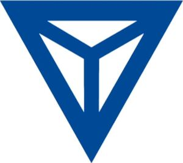

Trade Mark Journal No.2025/032 8 August 2025
WO0000001866100 (6,7,11,12)
Office of origin: European Union Intellectual Property Office (EUIPO)
Date of International Registration:13 May 2025
Date of designation in the UK:
13 May 2025

The mark contains the colours blue, white.
International priority date claimed: 19 March 2025
(European Union Intellectual Property Office (EUIPO))
(019159378)
- Class 6
- Pipes and tubes of metal; steel pipes and tubes, pipe bends of metal; hollow shaped components of metal, in particular of steel, in the nature of hollow steel bars; reinforcements of metal for motor vehicles, steel profile components in the nature of metal sheets, rods and steel pipes; aluminium profile components in the nature of metal sheets, metal rods and metal pipes; hot formed components of steel in the nature of metal sheets, steel rods and steel pipes; press hardened components of steel in the nature of metal sheets, steel rods and steel pipes; coated steel profile components in the nature of metal sheets, steel rods and steel pipes; coated hot-formed components of steel in the nature of metal sheets, steel rods and steel pipes; coated press hardened components of steel in the nature of metal sheets, steel rods and steel pipes, pressed, drawn, stamped and press hardened parts of metal, hot-formed and tempered steels parts, in particular for the automobile industry; turned and milled parts namely, metal sheets, steel rods and steel pipes; metal tanks [containers], in particular for gases, tanks of metal for the storage of compressed gases, tanks of metal for the storage of liquefied gases; forged parts of metal; metal pipes for liquid and gas transfer; pipes and tubes of metal for hydrogen applications; hydrogen-resistant steels and pipes of metal.
- Class 7
- Machines and apparatus for the glass industry; glass working machines, glass washing machines, edging machines; edge treatment machines; forming dies being parts of machines; exhaust gas treatment systems for diesel engines, petrol engines and other fuel engines, in particular manifolds, catalysts, diesel particle filters, particulate air filters for exhaust systems for internal combustion engines; turbocharger housings, exhaust gas recirculation systems; parts of engines, in particular fuel distributors, injection lines; press hardening tools, hot forming tools, punching machines; cutting machines; metal processing machines; feeders for machines; furnace loading machines; welding machines; assembly machines; turn tables for machines, tables for machines, rotary tables for machine tools; housings for machines, in particular for welding machines; feeders and transfers for hot forming lines; press hardening lines, welding lines and assembly lines; process control units for glass working industrial plants.
- Class 11
- Apparatus for heating and steam generating; heating pipes for heating systems, pipes for heat exchangers and condensing installations for nuclear power plants and other power plants, pipes for steam generators; industrial furnaces, roller hearth furnaces, roler hearth furnaces for hot forming and press hardening of metal, roller hearth furnaces for heat treatment of battery cell materials, chamber furnaces.
- Class 12
- Vehicle body parts and structural parts for vehicles, in particular A, B and C pillars, door rings, door impact supports, underbodies, shear panels, tunnels, sills, roof frames, instrument panel mounts and transverse and longitudinal bars being parts for vehicle bodies, in particular for the reinforcement thereof, and for protection from impact and rollover; steering knuckles, front axles, rear axles for vehicles; axle assemblies for vehicles; bumber systems for motor vehicles, consisting of transverse bumper bars, crash boxes and flange plates; bumbers for automobiles; frames and wheel suspensions for vehicles and parts therefore, comprising rear axle supports or front axle supports, auxiliary frames, axle supports or engine mounts, links in the nature of longitudinal and transverse links, supporting links, guide links, spring links, triangular links, trapezium links and stabilisers and torsion beam axles; body, structural and chassis parts for electric vehicles; body, structural and chassis parts for fuel cell vehicles; structural parts for the substructure of electric vehicles, in particular battery trays and battery crash frames; metal cooling plates for electric vehicle batteries; underride guards for land vehicles; fuel pipes for land vehicles, drive shafts for land vehicles, cardan shafts for land vehicles, rotor shafts for land vehicles, tubes for gas springs of land vehicles, tubes for airbag generators of land vehicles; wheel carrier for land vehicles, powertrains for land vehicles; modular chassis systems for vehicles; suspension systems for land vehicles.
BENTELER Business Services GmbH
Representative: BOCKERMANN KSOLL GRIEPENSTROH OSTERHOFF, Bergstr. 159, 44791 Bochum, GERMANY